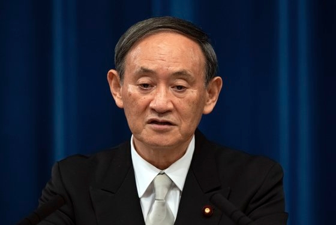

스가 일본 총리 압류자산 현금화하면 한일관계 심각 상황…절대 피해야

스가 요시히데 일본 총리가 지난달 16일 기자회견에서 발언하고 있다.
AP=연합뉴스
스가 요시히데(菅義偉) 일본 총리는 21일 일제 징용 배상 문제와 관련해 한국에서 압류된 일본 기업의 자산이 현금화될 경우 한일 관계에 매우 심각한 상황을 초래하므로 절대로 피해야 한다
고 경고했다.
마이니치신문에 따르면 스가 총리는 이날 인도네시아 방문 중 수도 자카르타에서 열린 기자회견에서 일제 징용 피해자 배상 문제와 관련한 질문에 그간 여러 차례 언급한 바 있다
며 이같이 말했다.
스가 총리는 이 문제가 해결되지 않을 경우 올해 말 한국이 의장국으로 개최할 예정인 한·중·일 정상회담에 불참할 것이냐를 묻자 한일 간 외교적으로 이뤄지는 사안 하나하나에 코멘트하는 것은 삼가겠다
며 한·중·일 정상회담 일정 등은 결정된 것이 아무것도 없다
고 말했다.
앞서 한국 대법원은 2018년 10월 징용 피해자들이 일본제철(옛 신일철주금)을 상대로 낸 손해배상청구소송에서 회사 측에 '피해자 1인당 1억원씩 배상금을 지급하라'고 판결했다.
하지만 일본제철이 판결 이행을 거부함에 따라 해당 소송의 원고 측은 손해배상 채권 확보를 위해 일본제철과 포스코의 비상장 한국 내 합작법인인 PNR 주식 압류를 법원에 신청해 현금화하는 절차를 밟고 있다.
일본 정부는 해당 강제징용 배상 문제와 관련해 1965년 체결된 한일청구권 협정에 위배되는 것이며 한국이 국제법 위반을 시정하고 해결책을 내놓아야 한다는 주장을 고수해왔다.
한편 아사히신문은 지난 14일 일본 정부가 한국 측에 강제징용 문제와 관련해 일본이 수용할 수 있는 해법이 제시되지 않는 한 스가 총리가 한·중·일 정상회담에 참석할 수 없다는 입장을 전달한 것으로 알려졌다
고 보도했다.
함민정 기자 ham.minjung@joongang.co.kr